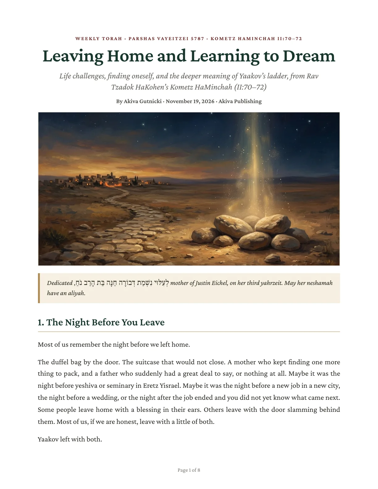
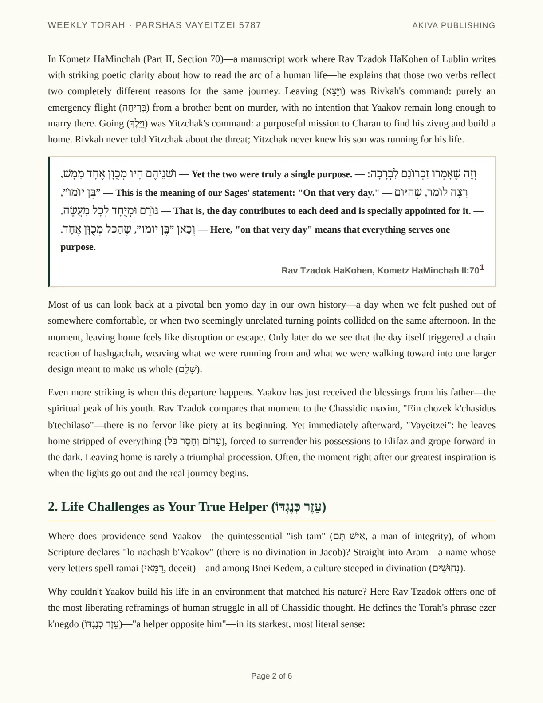
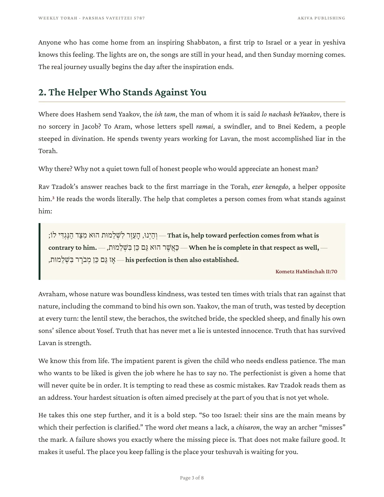
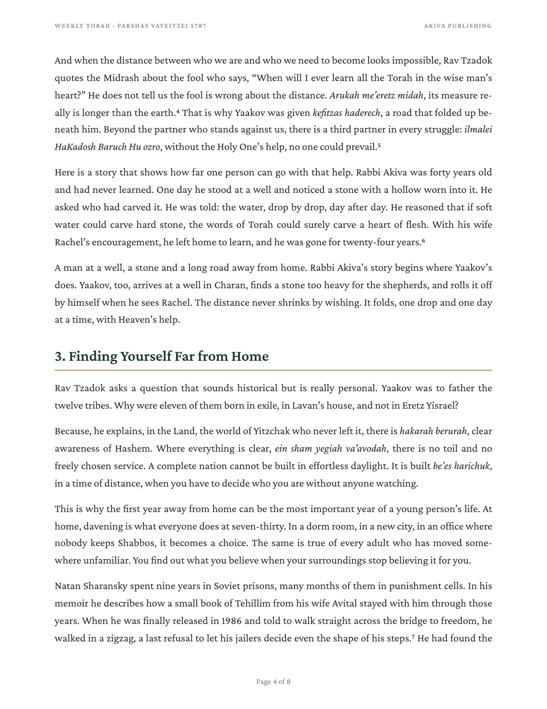
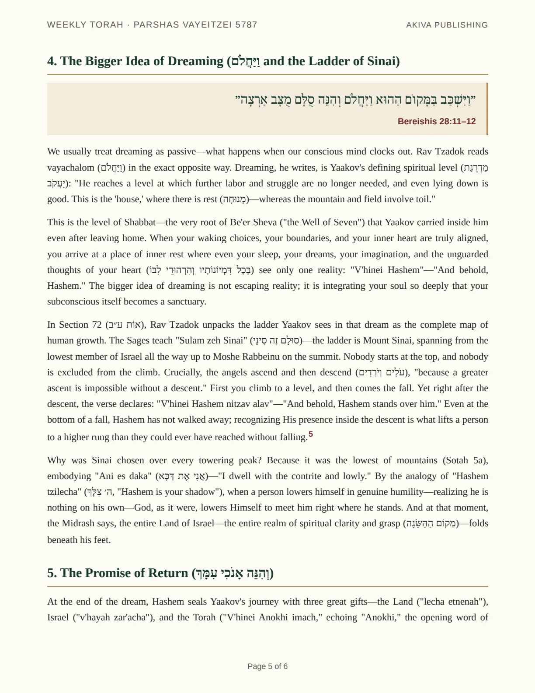
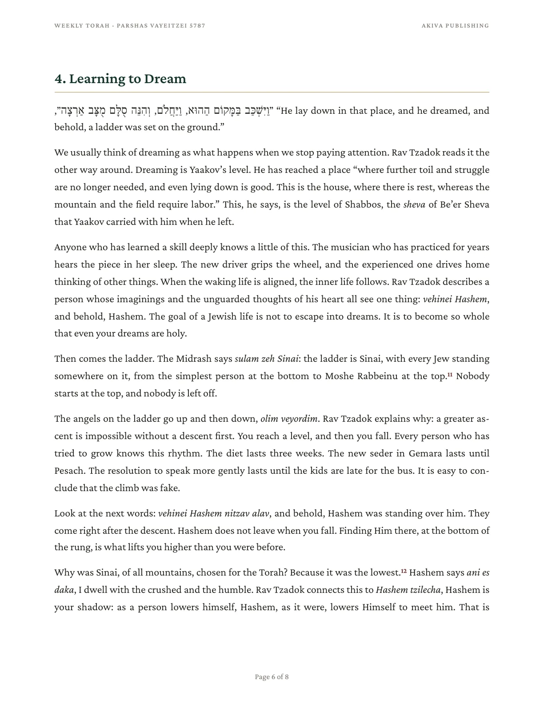
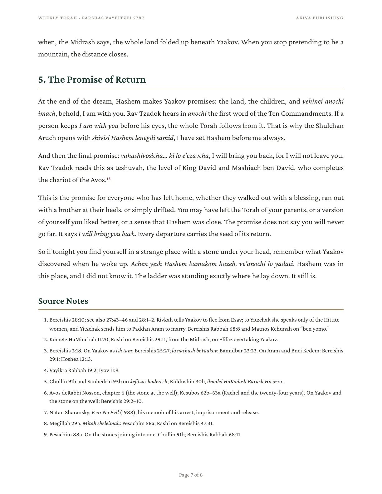
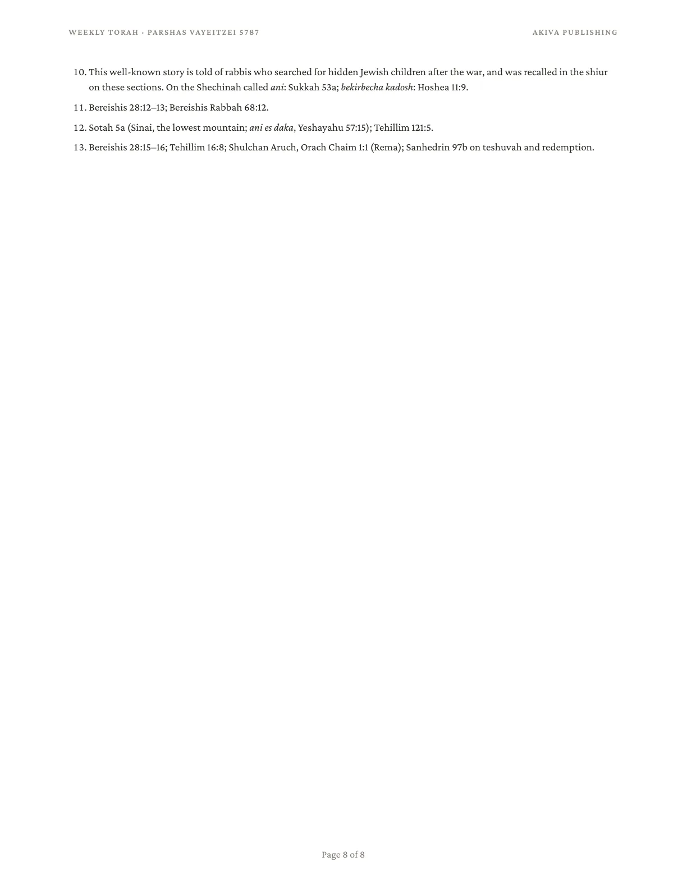

Life challenges, finding oneself, and the deeper meaning of Yaakov's ladder
Your place is saved in this browser, shared with the reader.
Shown page by page from the PDF. For text you can select, search or have read aloud, open the PDF or download the Word file.








Rav Tzadok HaKohen's Kometz HaMinchah (Part II, Sections 70–72 on Parshas Vayeitzei) in the Rav Tzadok Library reader, and as a 19-page PDF: the expanded interlinear translation with the shiur commentary and 77 source notes.